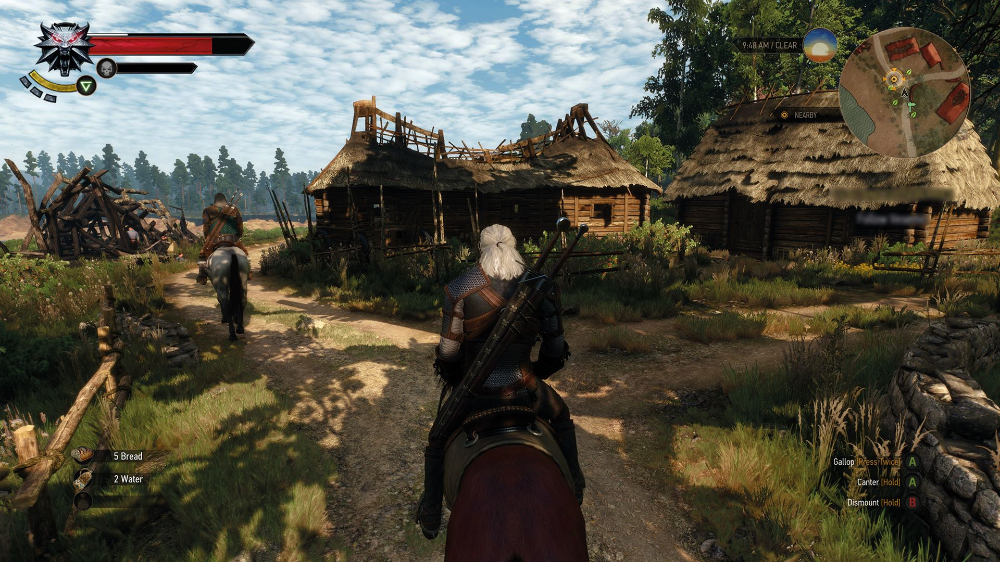
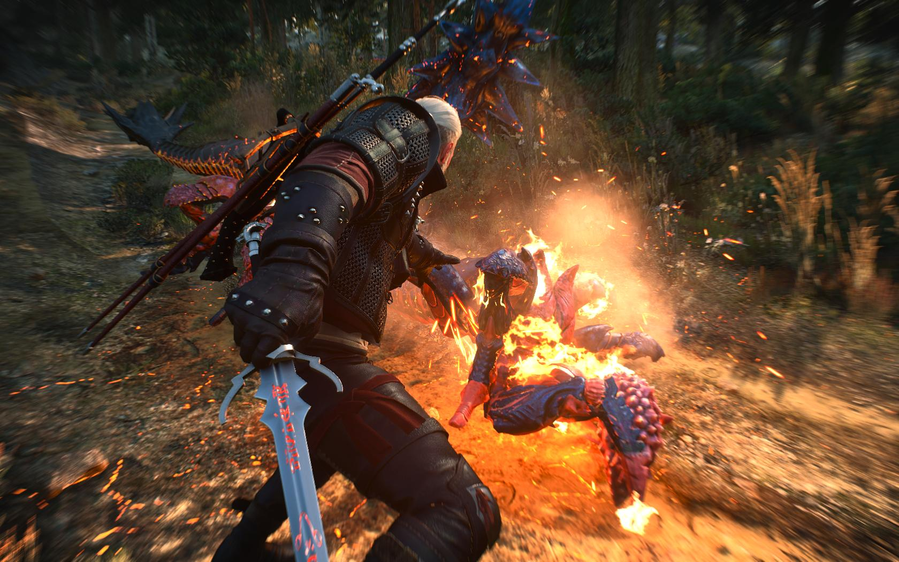
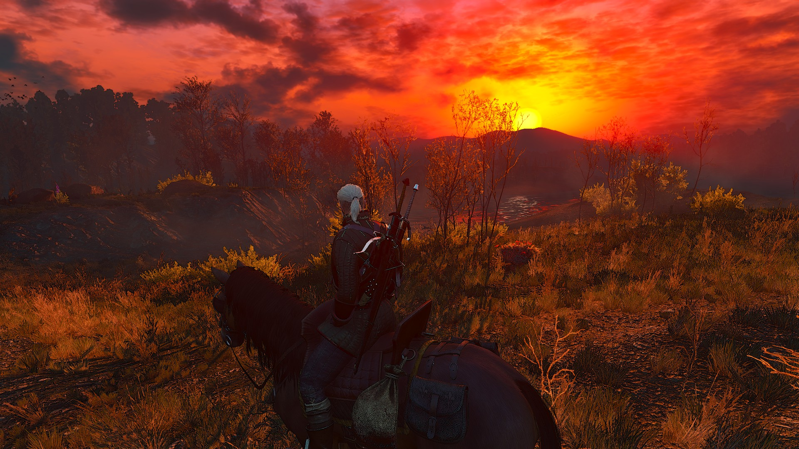

God of War
Подробное описание, характеристики, галерея и наш обзор.
Характеристики
| Цена | 2499.99 руб. |
|---|---|
| Разработчик | SIE Santa Monica Studio |
| Издатель | Sony Interactive Entertainment |
| Жанр | Action |
| Платформы | PlayStation, PC |
| Дата выхода | 20 апреля 2018 |
| Режимы | Одиночная |
| Системные требования (PC) | CPU: i5-2500K · RAM: 8 GB · GPU: GTX 960 · HDD: 70 GB |
Галерея



Аннотация
God of War переносит серию в скандинавскую мифологию и сосредотачивается на отношениях Кратоса и его сына Атрея. Камерный ракурс и бесшовная подача усиливают погружение, а бои строятся вокруг топора Левиафан и умений напарника. Исследование мира вознаграждается загадками, побочными историями и улучшениями снаряжения.
Сильная драматургия, зрелищные боссы и вариативная прокачка делают путешествие эмоциональным и насыщенным. На ПК игра получила графические улучшения и гибкие настройки производительности.
Наш краткий обзор
Кинематографичный экшен с акцентом на отношения отца и сына и мощной постановкой боёв.